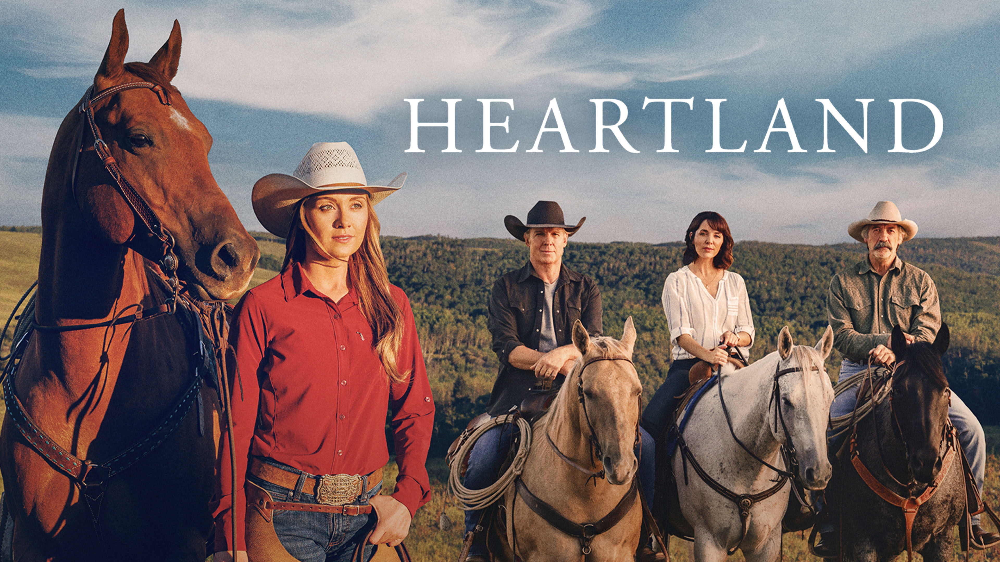

Heartland es una serie canadiense que combina drama, familia y naturaleza. Ambientada en las vastas praderas de Alberta, cuenta la historia de la familia Fleming-Bartlett, que vive y trabaja en el rancho Heartland, un lugar donde los caballos son mucho más que animales: son parte de la familia.
Desde su primera temporada en 2007, la serie ha cautivado al público por su mensaje de esperanza, amor y superación. Cada episodio muestra cómo los lazos familiares y la conexión con los animales pueden sanar heridas y construir nuevas oportunidades.
🌿 Lo que hace especial a Heartland
- El amor y respeto por los animales 🐴
- La importancia de la familia y las raíces 👨👩👧👦
- La conexión con la naturaleza y el trabajo rural 🌾
- Los paisajes espectaculares de Alberta, Canadá 🇨🇦
Con más de 15 temporadas, Heartland se ha convertido en una de las series más queridas de Canadá y del mundo. Su encanto radica en sus personajes reales, paisajes espectaculares y valores universales que inspiran a las personas a valorar la vida simple, la empatía y la unión.
← Volver al inicio